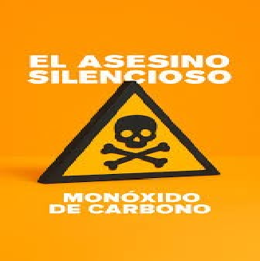

¿Te imaginas un peligro en tu casa que no lo puedas ver, ni oler, ni saborear pero puede ser muy peligroso para tu salud? ¡Ese peligro existe y se llama monóxido de carbono! En este artículo vamos a explorar sus causas así lo podemos prevenir para cuidarnos a nosotros mismos, a nuestras familias y vecinos.

Antes de hablar de cómo prevenirlo, primero vamos a entender qué es este gas, de dónde sale y por qué es tan peligroso. ¡Vamos a conocerlo!

¿Qué es el monóxido de carbono?
Es un gas incoloro (no tiene color), inodoro (no tiene olor) e insípido (no tiene sabor), por eso se dice que es el asesino invisible. Esto se forma cuando se queman cosas como por ejemplo: gas, leña, nafta o carbón sin que tengan suficiente oxígeno. Cuando lo respiramos entra a la sangre y evita que el oxígeno se transporte a nuestro cuerpo, y esto puede dañar a nuestros órganos más importantes como el corazón y el cerebro.
¿Qué prácticas del hogar pueden ser peligrosas?
- Dormir con brasas o llamas encendidas.
- Usar el horno o las hornallas para calefaccionarse.
- Colocar calefones en espacios cerrados.
- Encender motores de combustibles en garajes o en espacios sin ventilación.
¿Cómo nos damos cuenta de que está presente?
Síntomas
- Dolor de cabeza
- Mareos
- Náuseas
- Cansancio
- Dolor de pecho
- Dificultad para respirar
- Vómitos
Señales que avisan que hay un problema
- Las llamas de las cocinas de gas son amarillas o anaranjadas (deben estar celestes o azules).
- Apareción de hollín o tiznado alrededor del artefacto.
¿Cómo protegernos?
- Revisar los aparatos de gas una vez al año por un profesional.
- Mantener la ventilación.
- No calefaccionarse con el horno ni las hornallas.
- No dejar el vehículo encendido en el garaje.
El monóxido de carbono es un peligro real, ¡pero se puede prevenir!